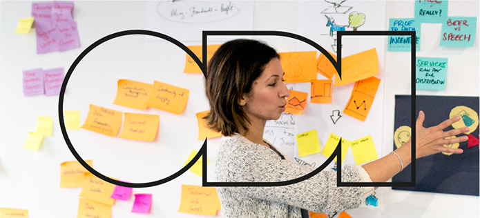
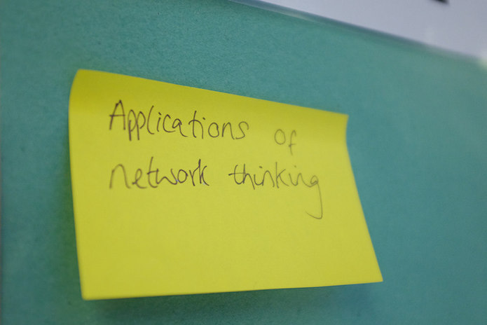
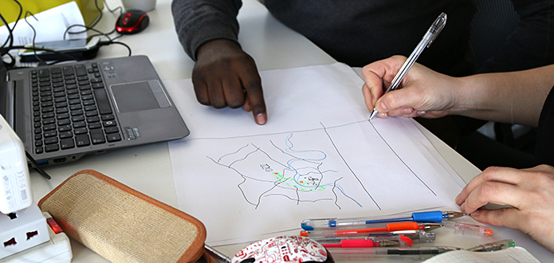

Open Data in a Day is the ODI’s flagship one-day course. Whether you're a total beginner or clued up on the basics of open data, Open Data in a Day will help you discover it, talk about it and use it for social, environmental and economic benefits

To read more about the course, find out when it's running and book your place, click here.
1. Many have heard of open data but few understand it
Millions of people across all sectors and industries worldwide are coming round to the idea of open data being ‘a good thing’. And yet few people can explain why. Get the competitive edge by understanding what open data is, and what it can do for you and your industry.
2. It saves us millions of pounds each year
The economic impact of open data is indisputable. To give one example, by opening up its data for travel apps like Citymapper to use, Transport for London saved its passengers between £15 and £57 million worth of their time each year.

3. More and more businesses have an open data strategy
Companies from Thomson Reuters to Syngenta are reaping the benefits of open data. Your business can, too.
4. We fit everything into one day
We have spent years developing this course so that it covers everything you need to know about the fundamentals of open data in a single day. We focus on using plain English, and offering useful lessons and practical results.

5. We can save you time at work
Open Data in a Day introduces you useful tools like Open Refine, which make working with and cleaning data quick and easy.
6. We take the confusion out of law and licensing
Open data licences can be a minefield. We break down its main legal aspects, without all the jargon, to help you to make informed decisions around licensing.

7. It can boost your professional development
Open data companies in the UK currently employ over 500,000 people. Our course can give you the skills to drawn on success stories and apply them to your own work.
8. It won't put you to sleep
We've adapted and improved our content for Open Data in a Day to make it as fun and interactive as it is informative.
But don’t just take our word for it, here's what some of our participants have said about the course:
Excellent introduction to open data – now keen to explore more about the subject and use knowledge gained!
– David, Open Data in a Day, September 2015
A really well rounded and paced insight … the expertise and enthusiasm really shines through. The practical examples and flexible discussions really ground the subject matter.
– Paul, Open Data in a Day, January 2015
I learned a huge amount about open data and feel much more equipped to talk about it with potential clients.
– Tom, Open Data in a Day, May 2015
10/10 – I now feel like an open data expert!
– Lewis, Open Data in a Day, January 2016
To read more about the course, find out when it it's running and book your place, click here.
Steffica Warwick is Product Manager at the ODI. Follow @StefficaWarwick on Twitter.
If you have ideas or experience in open data that you'd like to share, pitch us a blog or tweet us at @ODIHQ